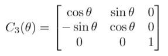
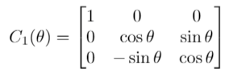
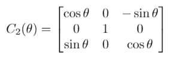

In the previous chapter, we discussed Cartesian coordinate frames and frame transforms in 2-D. However, we live in a 3-D world, so we need to understand more complex rotations than what was discussed in the previous chapter. Before jumping into full 3-D rotations, however, let's discuss what our 2-D rotations look like in a 3-D coordinate frame. In 2-D, we have two axes e1 and e2. If we add a third axis, e3 that is unit length and orthogonal to the first two vectors, then we have a 3-D Cartesian coordinate system. This is visualized in Figure 1 (a). For notational convenience, the first, second, and third axis in 3-D is commonly referred to as the x, y, and z axes, respectively.
Unfortunately, while 2-D rotations can be simply parameterized by a single scalar, 3-D rotations are significantly more complex, leading to a wide variety of possible representations of rotations. In this chapter, we will discuss several different parameterizations of rotation in 3-D. The order in which these representations are introduced is pedagogical (we hope!) but does not convey relative importance or utility.
Specifically, we will describe the following representations of rotations in 3-D:
Euler angles
Yaw-Pitch-Roll
Direction Cosine Matrix
Axis-angle and Rodrigues parameters
Quaternions
Note that there are mappings that exist between any one of these representations and all the others. For the most part, however, we will not be describing the conversions in this set of papers. Instead, we want you to have an intuitive-enough understand of each representation that when you implement a specific conversion (as copied from Wikipedia or some other reliable source, you can double-check to make sure things are actually equivalent).
With a third basis vector added to the coordinate frame, the rotation that we performed in the first chapter can now be visualized, not as an abstract rotation, but as a specific rotation around the third axis. In Figure 1, we show both a "left" and a "right"-handed rotation about e3. This can be viewed as putting your thumb in the same direction as axis e3 and the direction your fingers point is the way a "positive" rotation will occur.
The mathematical representation of this rotation is very similar to what we had in 2-D, namely:

Note that this represents a "right"-handed rotation about the z axis.1 It is also denoted as C3 to show that we are rotating about the third axis.
If, instead, we wanted to rotate about a different axis, we could follow a very similar pattern, namely:
Rotation about x:

Rotation about y:

There is a pattern to these matrices that is worth discussing. First, the axis which is being rotated about has a column and row with two 0s and one 1. So, equations (2), (3), and (1) represent (right-handed) rotations around the x, y, and z axes, respectively. Second, because these are right-handed rotations, the row right after the axis being rotated over has the positive sin θ term, and the line after that has the negative term. For Equations (2) and (1) this is easy to see. For Equation (3), note that the 3rd row comes after the y row, and it has a positive sin θ term, while the first row (following the third row) has the − sin θ value.
Tying back into chapter one, note that all of these rotations are assumed to be reference frame rotations and not object rotations. If they were object rotations, the rows following the axis being rotated around would have - sin values.
Right-handed rotations are the standard, for reasons that will be discussed later.
So far, we have talked about "adding" another axis to move from 2-D to 3-D. This new axis has to meet some requirements though. First, it has to be unit length and orthogonal to the first two axes. This leads us with two choices, leading us to the second constraint. Second, the axes must form a "right-handed" set of axes1. Mathematically, this is defined as putting the three axes in a matrix and making sure the matrix has a determinate of +1 (not -1). Conceptually, it is called a right-handed coordinate system because if you cross-product the x and y axes together, you can use your right hand to determine the direction of the z-axis. If you start with your fingers pointing in the direction of the x axis and orient your hand such that your fingers curl towards the y axis, your thumb will be pointing in the direction of the z axis.
So, consider Figure 1 (a). This is a right-handed coordinate system because e1 x e2, where x represents the cross product, leads to the 3rd axis coming out of the page towards you. If instead it went "into" the page, then it would be a left-handed coordinate system.
Note that a right-handed coordinate system has the following three properties:
If one is satisfied, all three properties are satisfied, but it is worth knowing that any two vectors imposes a directionality constraint on the other vectors.
We will discuss in more detail why this constraint is important when we get to DCM-based representations of rotation
While so far we have implemented 2-D rotations, but in a 3-D coordinate system, what we would really like to do is create a full 3-D rotations. Luckily, any 3-D rotation can be decomposed into a set of three 2-D rotations in sequence. So, for example, we could first rotate about the z axis, followed by a rotation about the y axis, and then the x axis. The full rotation would be:
C1C2C3
and is termed a 3-2-1 rotation because we rotate about the 3rd axis first. Note, however, that in the equation the rotations matrices are ordered 1,2,3. This is because when there is a position (a vector), it will be on the right of the matrices, so the multiplication essentially goes from right to left (3-2-1). Just remember that the math expressed things from right to left (imagine the vector running through the matrices; the vector starts on the right), while we describe it in written format from left-to-right.
This notation actually introduces 12(!) different ways we can express a 3-D rotation. Any 3-D rotation can be expressed as a sequence of three axis rotations. If two rotations in a row use the same axis, they are redundant, so we have all rotations i-j-k, where i,j,k are either 1,2, or 3 and both i ≠ j and j ≠ k. More precisely, the following ordered sets of rotations about an axis are all valid representations of a rotation in 3-D:

A few comments are in order on these rotations:
THE ORDER IN WHICH THE OPERATIONS OCCURS MATTERS! Sorry for shouting, but it is a very important point and can catch up even experienced rotation experts on occasion. With the exact same angles around the three axes, a 1-2-3 rotation will be very different from a 3-2-1 rotation. So, a 1-2-3 rotation of 30, 40, and 25 degrees is not the same as a 3-2-1 rotation of 25, 40, and 30 degrees.
The shaded rotations on the left are interesting because they repeat one of the axes. The ones on the right differ only in their ordering of the 3 unique axes.
While the representation may be very different, they all represent the same physical phenomenon, a rotation in 3-D space. So, for example, a 1-2-3 rotation of 30, 40, and 25 degrees.
First, let's discuss why different orderings lead to different representations of the same rotation. Consider Figure 2 (a-c) which shows just two rotations in a row (3-2), the rotation around axis 3 being 30 degrees and the rotation around axis 2 being 40 degrees. Then in Figure 2, the same two axis rotations are applied, but in the opposite order (axis 2 by 40 degrees, axis 3 by 30 degrees). Note that the after rotation around axis 2 by 40 degrees, axis 3 is in a different location (figure(d)) then it is in figure(a). This means that the same rotation by 30 degrees around axis 3 leads to very different rotations in the world. This is the reason why the ordering of the axes is critical. Therefore, a (3-2-1) rotation will be very different from a (1-2-3) rotation, even if the angles applied to each axis are the same in both rotations.
Obviously, having 12 different possible rotations orders, where the same set of 3 numbers can mean one of 12 different things, does not lead to conciseness and clarity. There is one set of rotations, closely related to Euler angles, that has a basis is the real world and is often used. This is to define all rotations in terms of three angles: yaw, pitch, and roll. These angles have physical meanings, which I find most easily explained in terms of a fixed-wing airplane. A (0,0,0) rotation is when the airplane is perfectly flat and headed straight North. Rotations from that position are as follows:
Yaw. This angle represents what "direction" the aircraft is pointed if projected onto a 2-D map. North is 0 degrees, and positive angles move from North to East. So, 0 degree=North, 45 = NOrthEast, 90 = East, 180 = South, and -90 degrees is west. (For those aeronautical types out there, this is the direction the plane is physically pointing, not actually moving if there is a cross-wind or other disturbances.)
Pitch. This is the angle of the airplane nose above the horizontal plane in which Yaw is defined. So, 0 degrees means an aircraft is perfectly level, 10 degrees means it is pointed up by 10 degrees, while -20 means the aircraft is pointed down.
Roll. After yaw and pitch, the roll angle tells how far below the horizontal plane the right wing is. So, 10 degrees of roll would mean that the plane is "banked" to the right (and usually will turn right). Negative roll angles means the aircraft is banked to the left.
Note that Yaw, Pitch, and Roll are very similar to Euler angles. In fact, if your coordinate system is defined as North (x), East(y), and Down(z) axes, then yaw is a right-handed rotation about the 3rd (z) axis, pitch about the y axis, and roll about the x axis, making YPR and 3-2-1 rotation around the North-East-Down (NED) axes. While this is very convenient, not all people like the NED axes, particularly because the to go up, the z numbers have to go down, which can be counter-intuitive. So, some people like east-north-up (ENU), or north-west-up (NWU). In both these cases, there is now not a simple mapping to